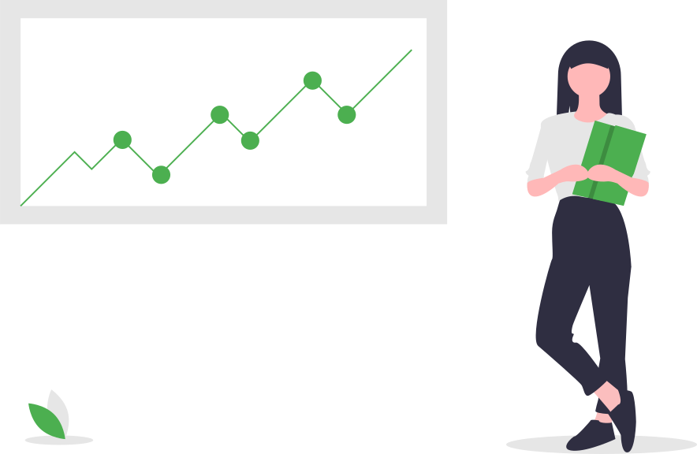
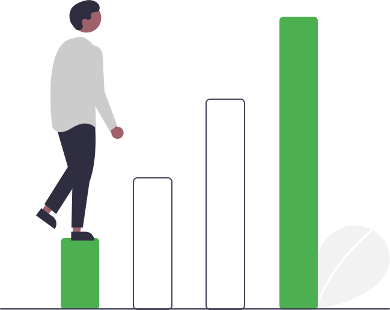

<section>
  <div id="carouselIndicators" class="carousel slide d-flex align-items-center justify-content-center"
    data-ride="carousel">
    <ol class="carousel-indicators">
      <li data-target="#carouselIndicators" data-slide-to="0" class="active"></li>
      <li data-target="#carouselIndicators" data-slide-to="1"></li>
      <li data-target="#carouselIndicators" data-slide-to="2"></li>
    </ol>
    <div class="carousel-inner">
      <div class="carousel-item active">
        
      </div>
      <div class="carousel-item">
        
      </div>
      <div class="carousel-item">
        
      </div>
    </div>
    <a class="carousel-control-prev" href="#carouselIndicators" role="button" data-slide="prev">
      <span class="sr-only">Previous</span>
    </a>
    <a class="carousel-control-next" href="#carouselIndicators" role="button" data-slide="next">
      <span class="sr-only">Next</span>
    </a>
  </div>
</section>
